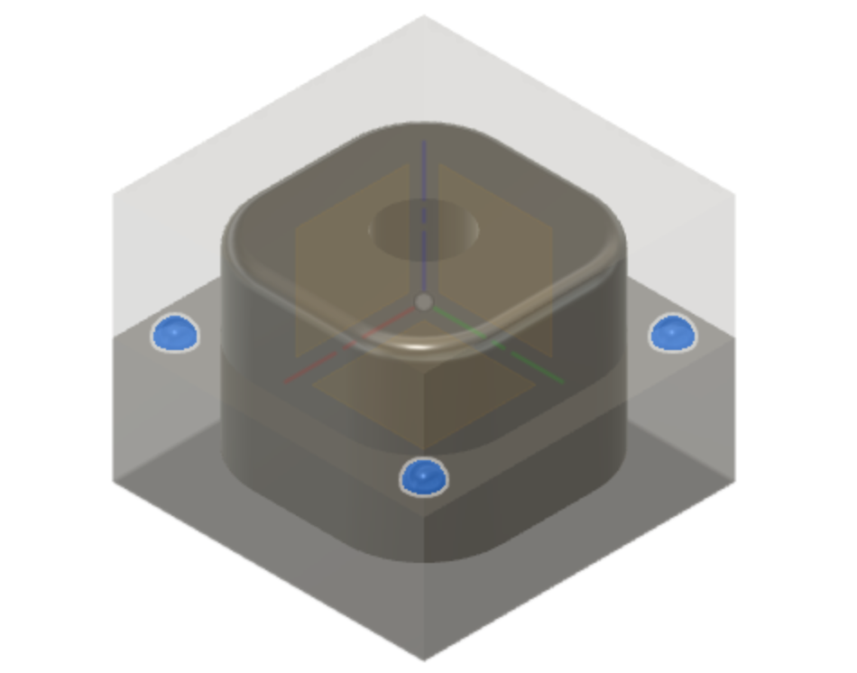

Lokaverkefni
Lokaverkefni áfangans samanstendur af því að fræsa stóran hlut úr krossvið í Shopbot fræsi og að fræsa út mót til þess að steypa hlut sem hópurinn hannar.
Hópurinn
Meðlimir hópsins eru Andri Dagur Ófeigsson, Björg Eva Steinþórsdóttir og Guðrún Karitas Blomsterberg.
Tafla 1: Vinnuframlag - Að fræsa eitthvað stórt
| Verkþáttur | Vinnuframlag [klst] | Ábyrgðaraðili |
|---|---|---|
| Hugmyndavinna | 12 | ADÓ, BES, GKB |
| Verkefnaskipting | 1,5 | ADÓ, BES, GKB |
| Hönnun | 15 | ADÓ, BES, GKB |
| Teikning í Fusion 360 | 3 | GKB |
| Undirbúningur fyrir fræsingu | 0,5 | ADÓ |
| Úrvinnsla í VCarve | 4 | ADÓ |
| Fræsing | 6 | ADÓ, BES |
| Samsetning | 3 | ADÓ, BES |
| Skýrsluvinna | 3 | BES |
| Skráning á vefsíðu | 3 | BES |
| Heildarvinnuframlag | 45 |
Tafla 2: Vinnuframlag - Fræsing móts
| Verkþáttur | Vinnuframlag [klst] | Ábyrgðaraðili |
|---|---|---|
| Hugmyndavinna | 3 | ADÓ, BES, GKB |
| Verkefnaskipting | 1,5 | ADÓ, BES, GKB |
| Hönnun og teikning hlutar | 4 | BES |
| Teikning móts í Fusion 360 | 6 | GKB |
| Toolpaths | 3 | ADÓ |
| Skýrsluvinna | 2 | ADÓ, BES |
| Skráning á vefsíðu | 2 | BES |
| Heildarvinnuframlag | 27,5 |
Hugmyndavinna lokaverkefnis
Hópurinn ákvað að hanna og fræsa einhverskonar húsgagn, ásamt skrautmun. Leitað var á netinu að hugmyndum og önnur Fablab verkefni skoðuð. Niðurstaðan var sú að hanna einhverskonar hliðarborð með tveimur hillum. Skrautmunurinn sem ákveðið var að hanna og steypa er einfaldur kertastjaki. Fyrirmynd verkefnisins er borð frá merkinu Norman Copenhagen sem fæst í Epal. En kertastjakinn hefur ekki sérstaka fyrirmynd.

Leitarorð notuð við hugmyndavinnu og framkvæmd: fablab furniture, diy furniture, side table, vagn húsgögn, sófaborð, candle sizes..
Hönnun hliðarborðs
Byrjað var á að áætla stærð hlutarins og í framhaldi teiknaðar upp hugmyndir að pörtunum sem þarf í verkefnið.
Áætlanir voru gerðar fyrir öll málin á borðinu. Í töflu hér að neðan má sjá niðurstöður þess.
Tafla 2: Áætlun mála
| Hæð | 70 cm |
| Breidd | 40 cm |
| Lengd | 60 cm |
| Hæð hillukanta | 5 cm |
| Þykkt í hillum | 1,8 cm |
| Þykkt fóta | 2*1,8 cm |
Á myndinni hér að neðan má svo sjá alla parametra sem settir voru upp í Fusion360.
Ákveðið var í samráði við kennara að nota tvær plötuþykktir (18mm*2) í fætur borðsins, til þess að auka stöðugleika. Til þess að nota hvorki lím né skrúfur voru því næst hannaðar festingar til að halda helmingum fótanna saman. Fyrstu hugmyndir af festingum fyrir hillurnar kröfðust þess að stór göt væru á botnum hillanna.

Þessu var í framhaldi breytt þannig að aðeins þurfi gat á stærð við fæturnar. Hér að neðan má sjá hvernig hópurinn sá fyrir sér festingarnar sem ákveðið var að nota bæði að ofan og neðan.

Festingarnar fyrir hillurnar var ákveðið að útfæra eins og nagla eða þess háttar, sem standa út úr fótunum og hillurnar geta setið á. Hér að neðan má sjá hvernig hópurinn sá fyrir sér festingarnar.

Teiknað í Fusion360
Fyrsta skrefið var að teikna hillurnar sem eru í raun opnir kassar með finger-joints. Myndband sem notað var sem fyrirmynd má sjá hér að neðan.
Hillurnar tvær eru nákvæmlega eins og því verður sama hilla skorin út tvisvar sinnum.

Því næst voru fætur borðsins teiknaðir, þar sem áætla þurfti stærð þeirra áður en staðsetning gatanna í botni hillanna voru ákveðnar.
Þegar búið var að áætla stærð fótanna var götum bætt við fyrir festingarnar, bæði fyrir þær sem koma til með að vera á toppi og botni sem og þær sem munu halda uppi hillunum.

Þegar fæturnir voru tilbúnir voru gerð göt á botn hillunnar í viðeigandi stærð. Ákveðið var að hafa gatið 2 mm lengra og breiðara en fótur borðsins til að auðvelda samsetningu.
Að lokum eru festingarnar teiknaðar, miðað við stærðir gatanna. Festingunni ofan og neðan á fótum borðsins er ætlað að liggja jafnt endum fótanna, svo hún virki sem hluti af þeim.

Festingin sem heldur uppi hillunum virkar eins og nagli, en hún hefur haus sem passar að hún gangi ekki of langt inn í fótinn og gerir hillunni kleift að sitja ofan á henni.

Lokaútkomu teikningar má sjá hér að neðan.

Undirbúningur fyrir fræsingu og VCarve
Þegar teikningu hefur verið lokið þarf að gera útflatning af öllum pörtum hennar. Það er gert með því að nota Align skipunina og leggja alla parta á x planið.

Teikningin er exportuð og vistuð sem *.dxf skrá. Í framhaldinu er skráin opnuð í VCarve. Þar eru partarnir afritaðir og fjölda hvers parts sem þarf í verkefnið stillt upp eins og sjá má hér að neðan.

Þá þarf að setja “fillet” á öll horn í innskotum, þar sem fræsirinn getur ekki gert skörp horn. Í VCarve er tól fyrir þetta og notast er við T-Bone fillet með 3mm radíus. Frekari upplýsingar um þessar stillingar og aðferðir má sjá í myndbandi frá kennara námskeiðsins, ef smellt er á takkann. Í myndbandinu má einnig sjá hvernig VCarve í tölvunni þar sem teiknað var er tengt við VCarve í Fablab, þar sem fræsingin mun fara fram.
Stilla þarf stærð plötunnar sem verður notuð, þ.e. lengd, breidd og þykkt.

Að lokum þarf að stilla feeds and speeds og toolpaths eins og myndbandið að ofan segir einnig til um. Hér að neðan má sjá þær stillingar sem settar eru inn fyrir verkefnið ásamt öllum þeim toolpaths sem settar eru inn, en þær eru sex talsins.

Fræsing hliðarborðs
Samsetning hliðarborðs
Hönnun og teikning kertasjaka
Kertastjakinn sem var upphaflega hannaður er sýndur á mynd hér að neðan.
Vegna vandræða við teikningu móts var ákveðið að endurtaka teikninguna á aðeins einfaldaðan hátt. Hér að neðan má sjá ferlið við teikningu seinni stjakans, en vinna við fyrri stjaka var ansi svipuð, þó tímafrekari.
Byrjað var á því að teikna kassa í Fusion 360.

Kassanum er svo gefin þykkt á z-ás til þess að mynda kubb.

Því næst er sett hola í miðjan topp kassans, en það er kertastæðið.

Stærð kertastæðisins er miðuð út frá staðlaðri stærð hás kvöldverðarkertis, eða 7/8 inches.

Að lokum eru horn stjakans rúnuð með Fillet skipuninni, 25mm á hornum hans sem vísa til hliðanna og 5mm á efri brún.

Teikning móts
Byrjað er á að teikna kassann sem verður að mótinu. Þá er teiknaður kassi með plan í miðjum hlutnum.

Þá er hann í framhaldinu stækkaður í báðar áttir til að umlykja kertastjakann í heild. Hlutirnir eru sameinaðir með útskurðarstillingu svo að kassinn verður holur þar sem hluturinn og kassinn mætast.
Þá er orðið til mót og slökkt er á kassanum og kertastjakanum til þess að geta skorið mótið í tvo hluta um miðju. Til þess að skera mótið er búið til plan mitt á milli topps og botns mótsins og það er notað sem skurðarásinn.

Þegar mótinu hefur verið skipt í tvennt er þarf að búa til festingar til þess að mótið smelli saman. Til þess eru gerðar holur og kúlur sem passa í þær. Til að búa til holurnar eru settar kúlur á öll fjögur hornin á öðrum helmingnum af mótinu.
Þær eru svo skornar út úr hinum helmingnum og virka þá sem festing.
Þá er komið að því að búa til holu til þess að geta hellt efni inn í mótið. Hole skipunin er notuð og búin er til hola við miðjuna á botni mótsins.

Sett er upp Draft Analysis til þess að sjá hvar mögulegir vankantar gætu orðið á mótinu.